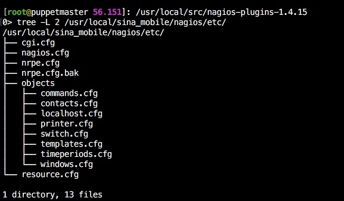
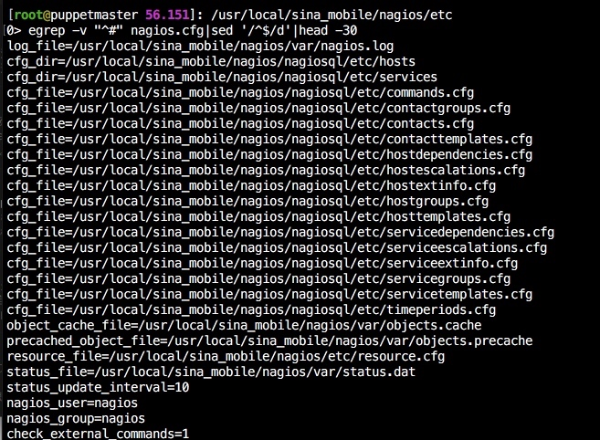

nagios配置

通过上图，我们可以很明显的看到所有的配置文件。下面来介绍每个配置文件具体作用。如下：
cgi.cfg用于控制CGI访问的配置文件。
htpasswd.users用于存放nagios管理员用户名和密码的文件。
nagios.cfg是nagios主配置文件，所有的cfg配置文件（外部调用除外）必须都在此文件中引用cfg配置文件才能生效。
resource.cfg变量定义文件，又称为资源文件。该文件中定义的变量，可以被其他配置文件引用，如$USER1$。
objects是一个目录，此目录下的文件主要用于定义nagios的监控对象。
commands.cfg是nagios监控命令的定义文件，其中定义的命令可以被其他配置文件引用。
contacts.cfg是定义nagios监控对象出现故障时，通知的联系人和联系人组的配置文件。
localhost.cfg是定义监控本地主机的配置文件。
templates.cfg是定义主机和服务的一个模板配置文件。
timeperiods.cfg是定义nagios监控时间段的配置文件。
services.cfg是存放具体被监控服务的相关配置内容。该配置文件默认是不存在的，需要自己手工建立，并且要建立在services目录下。同时还需要在nagios.cfg文件指定services目录。如下：

hosts.cfg存放具体被监控的主机相关配置。该配置文件默认是不存在的，需要自己手工建立，并且要建立在hosts目录下。同时还需要在nagios.cfg文件指定hosts目录。与services.cfg使用方法相同。
nagios配置文件之间的关系
在nagios的配置过程中涉及到定义有：主机、主机组，服务、服务组，联系人、联系人组，监控时间，监控命令等。从这些定义可以看出，nagios各个配置文件之间是互为关联、彼此引用的。
要成功配置出一台nagios监控系统，必须要弄清楚各个配置文件之间依赖与被依赖的关系，最重要的有四点：
第一：定义监控哪些主机、主机组、服务和服务组。
第二：定义这个监控要用什么命令实现。
第三：定义监控的时间段。
第四：定义主机或服务出现问题时要通知的联系人和联系人组。
cgi.cfg文件介绍
cgi.cfg文件是用来控制nagios的相关cgi脚本。如果想在nagios的web监控界面执行相关的cgi脚本，例如重启nagios进程、关闭nagios通知、停止nagios主机检测等，这时就需要配置cgi.cfg文件。
nagios.cfg文件介绍
nagios.cfg是nagios的主配置文件，默认的路径为/usr/local/nagios/etc/nagios.cfg。所有的对象配置文件都必须在这个文件中进行定义才能发挥其作用，这里只需将对象配置文件在nagios.cfg文件中引用即可。

说明:
log_file=/usr/local/sina_mobile/nagios/var/nagios.log
log_file变量用于定义nagios在何处创建其日志文件。如果你使用了nagios日志轮询功能，那么nagios将在每小时、每天、每周或每月对日志进行轮询。
cfg_file=/usr/local/nagios/etc/objects/commands.cfg
用于定义nagios监控命令的配置文件。
cfg_file变量用来引用对象配置文件，如果有更多的对象配置文件，我们只需在nagios.cfg文件中依次添加即可。对象配置文件中一般包含主机、主机组、联系人、联系人组、服务、命令等对象的定义
cfg_dir=/usr/local/sina_mobile/nagiosql/etc/services
cfg_dir变量用于引用一个目录里包含的所有对象配置文件。所有在这个目录下的且以.cfg为后缀名的文件将被作为对象配置文件来处理。另外，nagios将会递归该目录下的子目录并处理其子目录下的全部配置文件。你也可以把配置放入不同的目录并且用cfg_dir=语句来指向每个待处理的目录
cfg_file=/usr/local/sina_mobile/nagiosql/etc/contacts.cfg
用于引用nagios联系人的配置文件。
cfg_file=/usr/local/sina_mobile/nagiosql/etc/timeperiods.cfg
用于引用nagios监控时段的配置文件。
cfg_file=/usr/local/sina_mobile/nagiosql/etc/templates.cfg
用于引用nagios监控对象的模版文件。
cfg_file=/usr/local/sina_mobile/nagiosql/etc/localhost.cfg
用于引用nagios监控本地(Linux)主机的配置文件。
resource_file=/usr/local/sina_mobile/nagios/etc/resource.cfg
resource_file变量用于存储用户定义的宏，定义nagios资源配置文件，可以在nagios.cfg中定义多个资源文件。
status_file=/usr/local/sina_mobile/nagios/var/status.dat
status_file变量用于定义nagios的状态文件，此文件用于保存nagios当前的状态、宕机信息等。它会在每次nagios重新启动的时候被清空删除。
status_update_interval=10
该变量用于定义状态文件（即status.dat）的更新时间间隔，单位是秒，最小更新间隔是1秒，默认是10秒。
check_external_commands=1
该变量用于设置是否允许nagios在web监控界面运行cgi命令，也就是是否允许nagios在web界面下执行重启nagios、停止主机、服务检查等操作。其中1表示允许，0表示不允许。
command_file=/usr/local/sina_mobile/nagios/var/rw/nagios.cmd
定义nagios用来检查外部命令请求的文件。这个文件同样也是用户操作提交与CGI命令写入的地方，所以这个文件必须对于相关服务可写，一般是针对Apache的宿主用户可写。并且注意，这个文件所在的目录的权限必须被Apache可写，而不单指这文件，因为这个文件在工作当中是频繁被写入和删除的。
lock_file=/usr/local/sina_mobile/nagios/var/nagios.lock
定义nagios运行时用来保存它的PID文件。
temp_file=/usr/local/sina_mobile/nagios/var/nagios.tmp
定义nagios临时文件路径。它将在nagios运行时不停地被建立、使用和删除。
log_rotation_method=d
定义nagios的日志轮询方式，默认是每天轮询。值为n表示none，不做轮询。值为h表示hourly，每小时轮询一次（每小时的开始）。值为d表示daily，每天轮询一次（每天的午夜）。值为w表示weekly，每周轮询一次（每周六的晚上）。值为m表示monthly，每月轮询一次（每上个月的最后一天的午夜）。
log_archive_path=/usr/local/sina_mobile/nagios/var/archives
定义nagios日志的归档路径。
command_check_interval=10s
该变量用于定义nagios对外部命令检测的间隔，默认为10秒。如果这个数值不加上单位的话，默认单位为分钟。例如1就是表示1分钟，nagios每分钟检测一次。
service_check_timeout=60
定义服务检测的超时时间，默认为60秒。如果服务检查时间超过所定义的时间，则显示为CRITICAL状态。
host_check_timeout=30
定义主机检测的超时时间，默认为30秒。若主机检查时间超过所定义的时间，则显示为CRITICAL状态。
event_handler_timeout=30
定义事件处理最长时间，默认为30秒。若事件处理最长时间超出所定义的时间，则nagios会发出一条warning警告信息并记录到日志中。
notification_timeout=30
定义通知信息发送的时间间隔，默认为30秒。
interval_length=60
该变量用于定义nagios检测时间间隔的单位，默认值是60秒，即1分钟。也就是说在nagios中，检测时间间隔默认是以分钟为单位的。